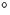

The first model is the linear tail model described above, the
currently accepted `standard model'. In this case, Oi atoms
aggregate in the same  110
110 plane as the defect core, in
neighbouring BC sites. To form TD16 we require 14 new thermal donors
after TD3. If each of these grows through a dimer adding to the
previous defect that implies 13
plane as the defect core, in
neighbouring BC sites. To form TD16 we require 14 new thermal donors
after TD3. If each of these grows through a dimer adding to the
previous defect that implies 13 2+4=30 oxygen atoms in TD16.
If the scheme is slightly modified and the TDs grow through Oi
addition then this number can be reduced to 17. Thus there is a chain
of either 7 or 13 Oi atoms on each side of the defect core.
2+4=30 oxygen atoms in TD16.
If the scheme is slightly modified and the TDs grow through Oi
addition then this number can be reduced to 17. Thus there is a chain
of either 7 or 13 Oi atoms on each side of the defect core.
This model seems very unphysical. Oi strains its surrounding
lattice, causing 30% Si-Si bond dilation. When paired to form
O2i, there is once again a large strain field produced both above
(001) and in front (110) of the defect. Two dimer structures
together, the structure of the di-y-lid, seem sufficiently strained to
force the core oxygen atoms into tri-valent positions. A model where
Oi atoms collect along  110
110 next to the defect core is
reasonable for the first few Oi atoms, since TD3 is highly tensile
along this direction. But it would be unable to equalise the strain
field of 7 to 13 Oi atoms on each side. Although the strain field
in such a chain might be high enough to force more of these chain
Oi atoms into y-lid sites, these would be electrically active, and
the Coulombic repulsion with the TD core would be too high.
next to the defect core is
reasonable for the first few Oi atoms, since TD3 is highly tensile
along this direction. But it would be unable to equalise the strain
field of 7 to 13 Oi atoms on each side. Although the strain field
in such a chain might be high enough to force more of these chain
Oi atoms into y-lid sites, these would be electrically active, and
the Coulombic repulsion with the TD core would be too high.
One way in which a chain model can achieve these 13 different structures is if the chains on either side of the core can be of different lengths, and thus isomers are allowed. In this case, structures such as Oi-TD3-O3i would be allowed. Table 9.8 shows that a minimum of 6 total `tail' Oi atoms are required for this to explain all the TDs, i.e. a maximum tail length of 5Oi on each side.
The higher order annealing studies do not allow differentiation between an isomer and a serial development model. TDs 12 to 16 were seen simultaneously in a sample annealed for 3 hours at 470C [241], and so there is no information on their relative development; they are named in sequence of decreasing ground state binding energy.
Finally, extremely long tail models may not be consistent with
reorientation data[236]. For TD3  5 Oi hops are
required for reorientation; this would be possible with the di-y-lid
model. For higher order TDs there is a small increase in the
reorientation time prefactor, corresponding to more hops. However for
a long tail thermal donor to reorient through each atom hopping
individually, the number of reorientation steps would rapidly
increase, as the line has to sweep out a circle to realign itself.
One possibly way around this is if the atoms hop towards the core,
through the core, and back out along the new defect line; in this case
the number of hops required would equal the number of Oi atoms in
each `arm' of the defect plus some constant for the core to reorient
(presumably, from the TD3 result, five hops for the core).
5 Oi hops are
required for reorientation; this would be possible with the di-y-lid
model. For higher order TDs there is a small increase in the
reorientation time prefactor, corresponding to more hops. However for
a long tail thermal donor to reorient through each atom hopping
individually, the number of reorientation steps would rapidly
increase, as the line has to sweep out a circle to realign itself.
One possibly way around this is if the atoms hop towards the core,
through the core, and back out along the new defect line; in this case
the number of hops required would equal the number of Oi atoms in
each `arm' of the defect plus some constant for the core to reorient
(presumably, from the TD3 result, five hops for the core).
| Number of | Number of | Cumulative |
| `tail' Oi | TD isomers | number of TDs |
| 1 | 1 | 1 |
| 2 | 2 | 3 |
| 3 | 2 | 5 |
| 4 | 3 | 8 |
| 5 | 3 | 11 |
| 6 | 4 | 15 |